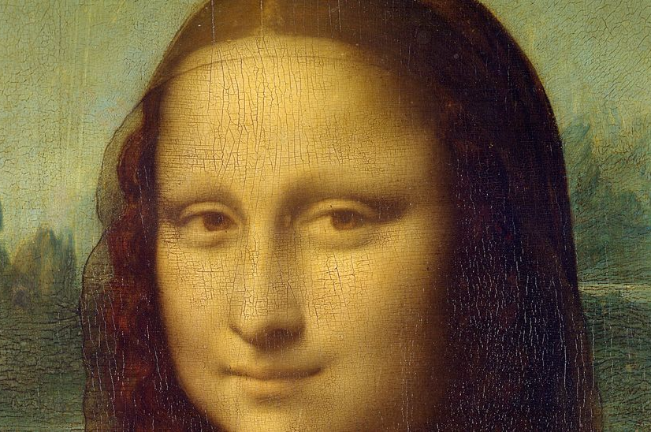

Kenzo Sutarwan - Minggu, 27 Agustus 2023
The Mona Lisa is a work of art painted by the Italian artist Leonardo da Vinci in the 16th century. This oil painting is very popular in the world because it holds many mysteries that have not been solved so far, including the smile and glance from the eyes of the woman who is painted.
It is said that the woman in the painting is the wife of a Florentine merchant named Lisa del Giocondo.
She was a woman who was born on June 15, 1479 and died on July 15, 1542. Not much is known about her figure, other than the fact that Mona Lisa was the wife of Francesco di Bartolomeo del Giocondo.
Leonardo da Vinci began painting the Mona Lisa in 1503, and it remained in his studio until his death in 1519. According to some researchers, the Mona Lisa may have been worked on by da Vinci intermittently for several years. In his painting activities, da Vinci added several thin layers of oil at different times. Small cracks in the paint, called craquelure , appear throughout the piece, but are more subtle on the hands, where the thinner glaze corresponds to Leonardo's late period work.
This Mona Lisa painting is also known by the nickname " La Gioconda " in Italian or " La Joconde " in French, both of which mean "carefree woman".